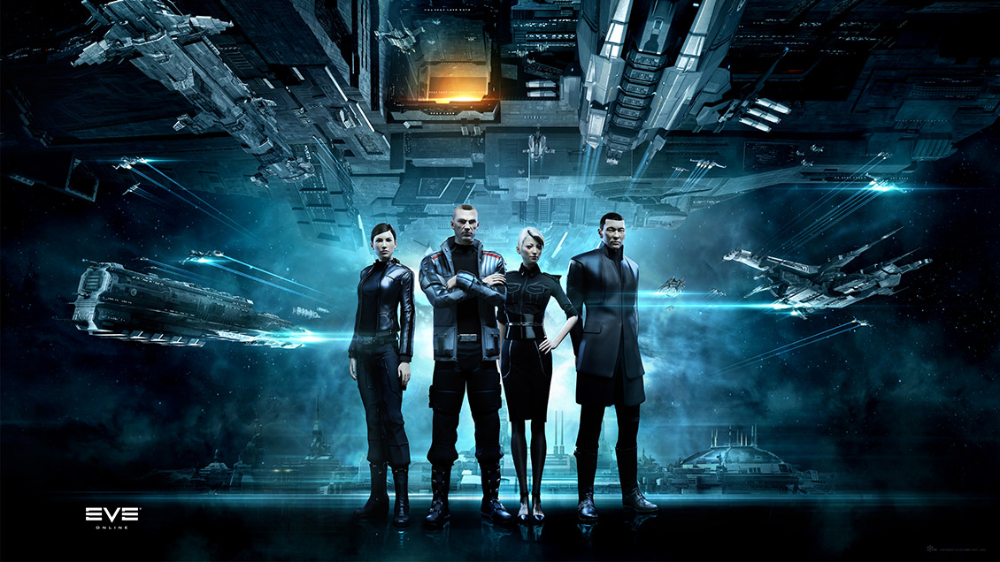

Империя Амарр (англ. Amarr Empire) - самая древняя из четырёх доступных игрокам рас. Амарр первыми развили технологии варп-прыжков - благодаря тому, что в их родной системе находились полуразрушенные ворота для межзвёздных перелётов. Они быстро подчинили себе соседние системы и начали активную экспансию в мире Нового Эдема, что привело к чрезвычайному росту Империи.
Все амаррцы чрезвычайно религиозны - их традиции и обычаи фактически лежат в основе их государственности и быта. Рабство в Империи является повсеместной практикой и даже поощряется. За несколько веков агрессивной экспансии Империя поработила множество народов, но вскоре им пришлось столкнуться с серьёзным противником - Федерацией Галленте, в результате чего началась жестокая война. Галленты были малочисленны, однако обладали серьёзным военным и экономическим преимуществом, а вмешательство в конфликт Джовианцев и восстание Минматар очень сильно подорвало состояние растущего государства.
В результате серьёзного поражения Амарр лишились огромного количества звёздных систем, а их внешняя политика стала немного более либеральной и терпимой. Несмотря на потери, Империя Амарр до сих пор является самой населённой в Новом Эдеме и контролирует около 40% всех цивилизованных планет.
Родословная
В амаррском обществе свободными и полноправными гражданами считаются лишь представители трёх народов - истинные амаррцы, ханиты и ни-кунни (некоторые из которых и сейчас являются рабами, но это скорее исключение)
Амаррцы - выходцы с родного мира Амарр, являющиеся самой привилегированной нацией в Империи. Высокомерные и крайне религиозные, они свято чтят традиции предков и относятся к остальным людям Нового Эдема с изрядной долей презрения и высокомерия.
Ханиды - ближайшие соседи Амаррцев, которые очень быстро смогли ассимилироваться и стать полноправными членами растущей Империи. В переводе с Амаррского их название означает "маленький лорд", что показывает их положение в обществе. Ханиды - прирождённые воины, которые всегда были основой амаррской армии и флота.
Ни-кунни - были одной из первых рас, которые были порабощены Империей Амарр. Находясь в этом обществе уже около тысячелетия они лучше всех других сумели принять традиции и устои амаррцев и на данный момент практически все представители этого народа являются свободными полноправными членами Империи. Ни-кунни - прирождённые торговцы, за что их слегка недолюбливают сами амаррцы.
Учебные заведение
Имперская Академия
- более традиционный аналог военных институтов других рас, который занимается подготовокой военных пилотов и обучает их искусству ведения войны в космосе. Образование в нём пропитано традиционной культурой амаррцев. Это единственное учебное заведение, которое готовит воинов в пределах Империи.
Хедионский Университет - лучшее заведение империи Amarr, которое готовит торговцев и бизнесменов. Университет расположен в системе Hedion, которая является первой системой, колонизированной Империей. В Хедионском Университете весьма либеральное отношение к традициям, которое сложилось за долгое время развития этого учебного заведения.
Королевский Амаррский Институт- является одним из древнейших учебных заведений во всём Новом Эдеме. Он был основан ещё до того как амаррцы вышли в космос - в то время, когда они владели лишь одним континетом на своей родной планете. Именно здесь обучаются лучшие производственники и шахтёры в Империи.
Государство Калдари
Основа Государства - чистый капитализм, в нём абсолютно всё управляется несколькими мегакорпорациями. Даже правительство Калдари представляет из себя Совет Директоров. Уровень жизни населения здесь весьма высокий, однако и требования к каждому гражданину также очень жёсткие и практичные. Весь дух Калдари пропитан прагматичным патриотизмом и духом конкуренции. Внешнеполитические отношения Калдари весьма заторможенные, так как торговлей занимаются отдельные корпорации, интересы которых вполне могут конфликтовать друг с другом.
В Государстве Калдари одним из самых популярных видов развлечения являются жестокие состязания, напоминающие гладиаторские бои Древнего Рима. Кроме этого, индустрия азартных игр достигла здесь максимального развития и является неотъемлемой составляющей внутренней экономики Калдари.
Несмотря на то, что между собой корпорации могут находиться в весьма напряжённых, а зачастую и враждебных отношениях, на внешнюю угрозу Калдари готовы ответить стремительно и максимально жёстко. Военные технологии имеют самый высший приоритет в разработке, однако даже сейчас Калдари до сих пор не могут достичь уровня развития Джовианцев, хотя очень к этому стремятся.
Отношение к представителям других народов относительно лояльное, однако не лишено типичного калдарского подхода - каждый человек интересен им ровно настолько, насколько может быть полезен.
Родословная

Детеис - основа Калдарского государства и нации. Представители Детеис являются прирождёнными руководителями с хладнокровным характером, которые одинаково эффективно работают как в военной, так и в политической или торговой сферах. Они всегда ставят общественное выше индивидуального и именно благодаря Детеис Государство Калдари сейчас имеет такой вид.
Цивир - жёсткий натиск и крепкая хватка являются основными чертами поведения представителей этой родословной. Большая часть боевых пилотов являются представителями Цивир, так как они чрезвычайно стрессоустойчивы и способны принимать самые верные решения в любой ситуации.
Ачура - являются частью общества Калдари около трёх столетий. Всё это время они ревностно хранили свою культуру и традиции, которые во многом считаются мистическими для других людей. Материальный мир значит для представителей Ачура далеко не так много, как мир духовный. В первую очередь, космические полеты этого народа преследуют цель раскрытия новых тайн Вселенной и Нового Эдема.
Учебные заведения
Государственная Военная Академия - основанная на заре становления независимости Калдари, эта Академия начала свою работу ещё во время войны с Федерацией Галленте. Это отразилось на манере обучения пилотов и в текущее время - в первую очередь основное внимание студентов уделяется боевым навыкам и умениям, зачастую в ущерб всему остальному.
Институт Науки и Торговли - самое серьёзное учебное заведение, которое подготавливает будущих ученых и бизнесменов. В первую очередь, образование здесь, как и везде в Государстве Калдари, предпочитает практические аспекты наук. Многие считают, что это самое требовательное и жестокое по отношению к ученикам заведение, однако оно также даёт и очень качественное образование
Школа Практических Знаний - является основным заведением Государства Калдари, которое готовит непосредственных участников процесса производства - инженеров и шахтёров. Школа активно сотрудничает с множеством корпораций, что приносит огромную пользу как Школе и её студентам, так и самим корпорациям
Федерация Галленте
Федерация Галленте - является самой демократичной и гуманистичной фракцией из всех игровых рас, представленных в мире EVE. Свобода слова, настоящая демократия, право выбора, уважение культурных и религиозных традиций - вот основа галлентского сообщества. Галленты являются потомками французов, которые ассимилировали множество других народов и начали строить свой собственный новый мир в Новом Эдеме. В первую очередь Федерация славится своей роскошью и красотой - вряд ли где-то ещё в галактике вы сможете найти такие курортные
Родословная
Галленты - титульная нация Федерации Галленте. Именно галленты были первыми и единственными основателями настоящей демократии в Новом Эдеме. Обладают весьма кротким и незлобным нравом, зачастую нерешительны, однако когда ситуация накаляется - они проявляют чудеса смекалки как на военном, так и на экономическом поприще.
Интаки - один из самых многочисленных этносов, входящих в состав Федерации Галленте. Интаки от природы обладают высокой коммуникабельностью и поэтому занимают ключевые места в бюрократической машине Федерации. Несмотря на то, что они полностью интегрировались в галлентскую культуру, интаки сохраняют свои необычные взгляды на жизнь и смерть. Эти взгляды и традиции, плотно закреплённые в философии интаки оказывают сильное влияние на их способность противостоять лишениям и невзгодам.
Джин-мей были последним крупным народом, который вошёл в состав Федерации. Их традиционная кастовая система поначалу очень сильно конфликтовала с демократическими принципами галлентов, однако в конце концов они смогли как сохранить её в частичном виде, так и полноценно интегрироваться в сообщество Федерации
Учебные заведения
Академия Флота Федерации- единственное заведение в Федерации Галленте, которое готовит будущих пилотов для государственного военного флота. Академия возникла в связи с недавним ужесточением флотских стандартов и требований, которые предъявляются к кадетам. Обучение и входной порог Академии Флота очень и очень жёсткие, особенно учитывая галлентское общество, однако она даёт превосходное образование своим выпускникам.
Каиллский Университет- считается самым большим учебным заведением во вселенной - в его стенах проходит обучение около полумиллиона студентов. Университет долгое время служил огромным котлом, в котором варились самые разные идеи от представителей самых разных наций и культур. Университет работает по практически всем существующим направлениям образования, однако в первую очередь специализируется на антропологии.
Центр Углублённого Обучения - изначально созданный в качестве исследовательского центра, он развился в крупнейший научно-образовательный комплекс, занимающийся подготовкой промышленных и технических специалистов Федерации Галленте. Считается одним из лучших технических образовательных заведений в мире Нового Эдема.
Республика Минматар
Республика Минматар - самое молодое из четырёх основных государств Нового Эдема. Общественный строй является интересной смесью общинно-племенного быта с космическими реалиями будущего. Несмотря на то, что Республика является сильным и большим галактическим государством, на её территории живут лишь около четверти минматаров. Весьма большая часть минматаров являются гражданами Федерации Галленте и постоянно держат в напряжении политическую обстановку между Империей Амарр и Федерацией.
Родословная
Себьестор - бледные и худощавые, они создают впечатление нездоровых людей, однако это всего лишь особенность этого народа. Они - прирождённые инженеры, которые всегда были на острие науки минматарского общества уже более тысячи лет. Сами Себьесторы считают, что они могут построить что угодно, где угодно и из чего угодно.
Брутор - одно из самых агрессивных и многочисленных племён минматаров. Смуглые, физически сильные и выносливые они всегда в первую очередь ценили грубую силу и жёсткость. Несмотря на это, они всегда уделяли внимание даже мельчайшим деталям в своём окружении, всегда принимая верные и правильные решения. Бруторы ревностно хранят свои традиции, которые прививаются их детям с самого раннего возраста.
Верокиор - считаются ответвлением от клана Старкманир. Долгое время никто не знал об этом народе, который провёл долгие годы в скитаниях по самым безжизненным местам. Верокиор - истинные кочевники и торговцы, которые не утратили своего мировоззрения и в космическом мире. Шаманы Верокиор возвели на новый уровень искусство нанесения мистических татуировок и их нанесение считается одной из самых строгих и оберегаемых тайн этого народа. Будучи кочевниками и торговцами, они всегда имеют доступ к самому лучшему и худшему, что может предложить общество.
Учебные заведения
Паторская Техническая Школа - была основана для того, чтобы отбирать самых одарённых детей минматаров, для того, чтобы развить их таланты до самого высокого уровня. Это было крайне актуально во время становления Республики, однако и сейчас Школа следует этим принципом и готовит самых лучших учёных и промышленников на минматарском космическом пространстве.
Республиканская Военная Школа - долгое время была никому не нужным отпрыском минматарской образовательной системы - она существовала просто "для галочки" и была лишена всяческой поддержки и финансирования. Это было связано с тем, что большинство военных пилотов Республики Минматар предпочитали проходить подготовку в Федерации Галленте. Однако сейчас Республика стремится к полной независимости и поэтому Военная Школа сейчас получает столько внимания и поддержки, сколько никогда не было до этого.
Республиканский Университет - самое многогранное из учебных заведений Республики, оно было основано при поддержке тех минматаров, которые находились в составе других государств. Основанный при помощи галлентского Каиллского Университета, он полностью перенял галлентскую модель образования.